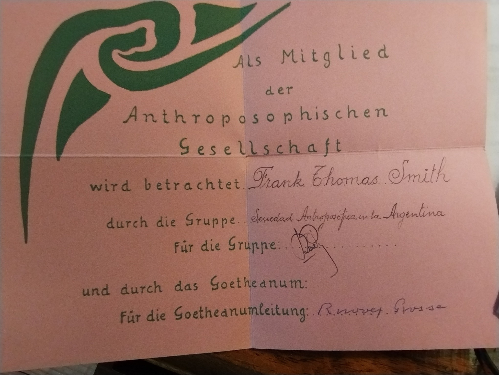
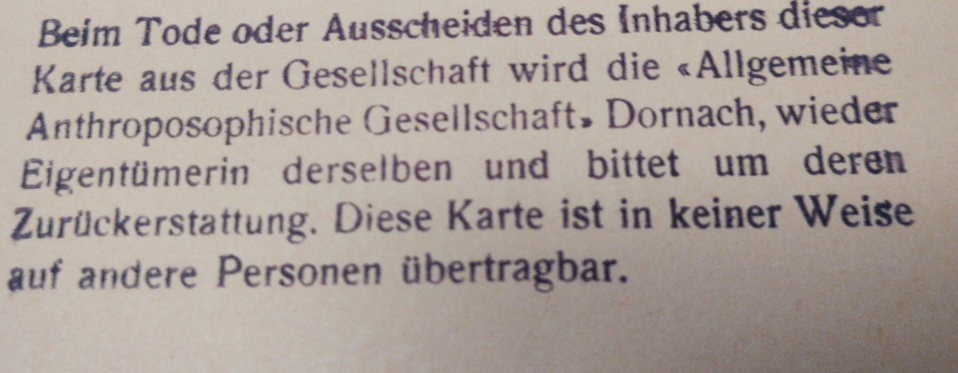

I thought there was only one Anthroposophical Society with its head office situated in Dornach, Switzerland. Of course I did, and why not? However, once there were two –the real one and an artificial one–, a long time ago and only for a very short time. The artificial one survived, the real one didn’t.
Let’s begin at where and how I first learned about all this.
In 1962, I was transferred by my employer –the International Air Transport Association (IATA)– from New York to Buenos Aires. I was accompanied by my wife and three-year-old daughter. My wife was originally German. We first met when I was in the U.S. Army in Germany. So, both I and our daughter also spoke German.
IATA had no organization in Argentina, so I was on my own business-wise, without speaking Spanish. As luck or destiny would have it, we found a house to rent in a suburb of Buenos Aires called Florida. Many Germans lived there, mostly immigrants who had arrived after the Second World War. There was also a German Waldorf school, although we didn’t know it when we first moved in: the Rudolf Steiner Schule.
The kindergarten was the obvious choice for our daughter. She stayed in the Rudolf Steiner Schule after kindergarten. It was when she was in the second grade that there was a conflict among the teachers, to the extent that her class teacher was brutally dismissed. My wife and I, along with many other parents, strenuously objected. We even tried to take over the school – unsuccessfully. So we and a small group of parents took our kids out of that school, which still contained a faint odor of Germany’s recent history, and started our own.
So I, new to Waldorf education as well as to Anthroposophy, found myself being a part-time teacher (English) as well as administrator of a Waldorf school. I had also become interested in Anthroposophy and became a member of the “Sociedad Antroposófica en Argentina”, which included membership in the “General Anthroposophical Society” in Dornach.
My membership card, having been designed by Rudolf Steiner himself, mailed from Dornach, read “Anthroposophical Society”, that is, without “General”. I may have wondered at this, but not too hard. Later it became a very important omission. I even became a First Class Member, also with a membership card, originally accessible only to those dedicated to Anthroposophy.
In 1974 IATA transferred me to Zurich, Switzerland. Neither I nor my wife were sorry to leave (although our eldest daughter, after twelve years in Argentina, was sorry). It was a dangerous time in Argentina, when local groups were trying to imitate the Argentinian Che Guevara’s success in Cuba. Foreign airline managers were easy targets to kidnap for ransom. I suspected that was the main reason for my transfer. So away we flew, from relative hell to relative heaven, so to speak, where our three children attended the Rudolf Steiner Schule in Zurich.
I soon learned to my great surprise that most of the school’s teachers were not members of the General Anthroposophical Society, but of a so-called “Anthroposophische Vereinigung in der Schweiz” (Anthroposophical Union in Switzerland). In fact, they and it were opposed to the G.A.S.
It seems that several years after Rudolf Steiner’s death a conflict arose between Frau Marie Steiner and the rest of the GAS Board (Vorstand) who maintained that the stenographic notes to Steiner’s lectures belonged to the GAS, because they were given within that venue for its members. Frau Marie however, maintained that all of Steiner’s literary work belonged to her, as his widow and according to his last will and testament. Furthermore, they were in her possession. She had organized a team of people who were occupied in translating the stenographic notes to written German and publishing them. The GAS Board sued Frau Marie in Swiss Court and lost. (I had to wonder at the ability of the GAS’s lawyers to imagine that they could win such a case.) By the time Marie Steiner died in December of 1948 she had founded a company to which she left the rights to Steiner’s literary work. This organization continued publishing Steiner’s work. The GAS sued again and lost again. I shook my head again.
Finally, I obtained an interview with the president of the Swiss Vereinigung, in order to find out the reason for their opposition. He explained that the GAS Board members, besides trying to take possession of Rudolf Steiner’s literary estate, had defamed Marie Steiner, calling her senile and power hungry and worse. I listened carefully and could not help sympathizing with Frau Marie’s friends and followers. Before leaving, I asked him who he thought would finally win, the Swiss Vereinigung or the GAS. “They will”, he said. Surprised, I naturally asked why. “They have the Goetheanum,” he said, whereas the rights to Steiner’s works would expire in the year 2000.
The legal question became moot in the year 2,000, seventy-five years after Rudolf Steiner’s death, when his literary works entered the “public domain”, that is, anyone could publish them – in German. Translations had their own rights.
Further research revealed that in 1935, when the Nazis had already taken control of Germany, Ita Wegman –a founding member– was expelled from the GAS Board, as was Elisabeth Vreede (about 2000 other members were also expelled from the GAS at that time). Why Ita Wegman and Elizabeth Vreede? There were several possibilities, I reasoned. They were, after all, Dutch, whereas the other surviving Board members were German (2) and Swiss German (1). It seems doubtful that Ita and Elisabeth agreed to the others bowing down to the Nazis in Germany and elsewhere, even though they did so to protect the Anthroposophical Society and the Waldorf schools there. Luckily, though, the Nazis finally banned both and all such anthroposophical entities. “Luckily” because after the war both entities, especially the Waldorf Schools, benefited from having been banned, and thus considered anti-Nazi by the victorious allies.
Also, I considered it doubtful that Frau Marie Steiner could have been happy about Rudolf Steiner’s close personal relationship with Ita Wegman.
But the real question, which I still ask myself, was: How could all this have happened to the Anthroposophical Society refounded by Rudolf Steiner during the Christmas Conference of 1923? He considered it, with its Free University for spiritual Science, to be essential for rescuing civilization from the stalking, strengthening materialism before the end of the twentieth century. Now, in November 2024, it is impossible to deny that materialism has made gigantic strides –especially with such things as artificial intelligence– whereas the (General) Anthroposophical Society is a mere blip on humanity’s computer screen.
Let’s go back to the tragic history of the Anthroposophical Society since 1925 when its constitution, as envisioned and originally implemented by Rudolf Steiner, was decisively transformed.
In this respect it must be remembered that the first Goetheanum was burned to the ground by arson on New Year’s Eve of 1922. This is not a conspiracy theory. The pertinent Swiss authorities investigated and decided it was arson. It was never determined, however, who the perpetrator was. It should not have been a surprise when looking back though, for from the time the building of the wooden Goetheanum began to be built in the Roman Catholic area of Dornach-Arlesheim, hate spewed forth almost ceaselessly from its opponents. It was as a result of this catastrophe that Steiner decided to refound the Anthroposophical Society, which had originally been founded in 1912 in Germany. Rudolf Steiner had not been a member. It existed in order to organize and finance his lecture cycles and other similar work.
In the new Society of 1923, he was not only a member, but also the president of the Board of Directors (Vorstand). Thus, the anthroposophical movement and the Society were now meant to be one, or at least united, without the usual conflicts between members or groups. It was, according to Steiner, a free Society without authoritarian rules, even democratic ones.
I read about this in the literature available to anyone interested. It was what I had read years earlier in Argentina, and what convinced me (and many others in many different parts of the world) that I wanted to become a member of the General Anthroposophical Society, not realizing that it was not the Anthroposophical Society of Christmas 1923.
That the Society was a mess of conflicts and jealousies in Argentina was, I thought, because almost nothing worked right in Argentina anyway; Europe must be different. But it wasn´t; it was worse. When I was transferred again, this time to Germany, I went to a few meetings of the GAS branch in Frankfurt, where I lived. It was so boring I had difficulty staying awake.
One day I received a letter from Gerhard von Beckerath, whom I had met during a meeting in Dornach, and whom I greatly respected. It enclosed a copy of another letter (all “real” letters, no internet those days) from Rudolf Saacke in which Saacke wrote that the GAS was not the real Anthroposophical Society. Von Beckerath asked if I would like to join a small group of anthroposophists who wanted to investigate Saacke’s thesis along with him. I was astonished and greatly interested. Unfortunately, I no longer have those letters.
A meeting was arranged with ten people: eight Germans, one Swiss and me, in Achberg, a town in Southern Germany, in Wilfred Heidt’s “KulturZentrum” there. I don’t remember the date of that first meeting; it was sometime between 1979 and 1984. We met several times a year until 1984, when I was transferred to Geneva. I continued to go to most further meetings. In any case, by Michaelmas 1986 a twelve-page “Memorandum” was prepared, signed by all ten of us.
Essentially, it describes how according to the statutes of the Anthroposophical Society refounded at the Christmas Assembly in 1923, it was to be free of all bureaucratic (Vereinmässigen) characteristics, according to Rudolf Steiner. Thus, the character of the Society would correspond to an open, free spiritual life. The central organ of this Anthroposophical Society was to be the “Free University (School) for Spiritual Science” at the Goetheanum in Dornach.
There was, however, another Society with the registered name “General Anthroposophical Society”. This Verein (legal association) had and still has all the legally necessary bureaucratic characteristics which the Anthroposophical Society of Christmas 1923 did not. It previously existed in Germany when it was planned to build the Goetheanum (then called the St. John Building) in Munich. When permission to build in Munich was refused, it was finally built in Dornach, Switzerland where a plot of land was donated for that purpose. It was called “Goetheanum”.
On February 8, 1925, a general assembly of that St. John Building Society was held In Dornach. The Society’s name was changed to “General Anthroposophical Society”. It’s Vorstand was the same as that of the Anthroposophical Society of Christmas 1923, with Rudolf Steiner as president, although he did not attend that assembly because of illness.
This renamed Building Society, now the G.A.S., had four sub-sections, specifically named in its statutes, to wit:
The Administration of the Anthroposophical Society,
the Philosophical-Anthroposophical Press,
the Administration of the Goetheanum and
the Klinisch-Therapeutisches Institut.
It was thus clear that the Anthroposophical Society of 1923 still existed, and its administration was to be managed by the General Anthroposophical Society Verein. It should also be borne in mind that all the documents relative to the Society of 1923 (statutes, membership cards such as my own, etc.) state “Anthroposophical Society” and not “General Anthroposophical Society”.
However, on March 22, 1925, a “Notification from the Executive Committee (Vorstand)” was published in The Goetheanum News concerning the decisions taken during the General Assembly of Feb. 8th. It was signed by “The Vorstand of the General Anthroposophical Society”. The members had no way of knowing that it was a General Assembly of the Goetheanum Building Society of February 8th and not of the Anthroposophical Society of the Christmas Assembly of 1923. The manner of presentation of the text gave the impression that it was a General Assembly of this latter Society. This notification claimed further that, through the decisions of February 8th, the Press, the Clinic and the Goetheanum Building were absorbed into the “whole organism of the General Anthroposophical Society”. The members could only understand this to be the Society of the Christmas Assembly. The great majority did not even know of the February 8th Building Society’s existence. Rudolf Steiner died eight days after the publication of that Notification.
On December 29, 1925, the first Extraordinary General Assembly of the Civil Association (Verein) “General Anthroposophical Society” took place. The members of the Christmas Assembly Society (Anthroposophical Society) were all invited. During the Assembly and also in the printed program of the Assembly, no differentiation was made between the two Societies. Therefore, the invitation to the Assembly of the Verein “General Anthroposophical Society” was made as though it were an Assembly of the Anthroposophical Society (Christmas Assembly Society). It was so because the sense of the Vorstand’s Notification of March 22, 1925 (see above), caused the members to assume that there was only one Society, and all 12,000 members of the Anthroposophical Society were members of it. This sealed the de facto fusion of the two Societies and in practice the disappearance of the 1923 Christmas Society. The organization prepared by Rudolf Steiner and the legal registration signed by him on February 8, 1925, were therewith annulled. The members of the Anthroposophical Society of the Christmas Assembly of 1923 were incorporated into a centralized Verein without them even being aware of it. The Vorstand had certain powers that the Statutes of the 1923 Society did not give it, for example, the expulsion of members without the necessity of giving a reason.
Some members objected, saying “Hey, these aren’t the statutes we approved at the Christmas Assembly.” The Vorstand maintained that those are the principles we live and work by, but these (the statutes of the 1925 Building Society) are the legally registered ones we must adhere to forever after. Case closed.

In those days (1969) membership cards were apparently only in German, even in Argentina. It reads:
“Frank Thomas Smith is considered to be a member of the Anthroposophical Society by the group Sociedad Antroposófica en la Argentina (signed Domingo Pita) and by the Goetheanum (signed Rudolf Grosse)”.
Nowadays they are also in Spanish, but the text is the same.
On the back of the card the following is printed, also in German: “If the holder of this card dies or leaves the Society, the ‘General Anthroposophical Society’ Dornach becomes the owner of the card and requests that it be returned. This card is in no way transferable to other persons.”

Therefore, the two Anthroposophical Societies –the real one on the front and the artificial one on the back– are included on the same card. How can that be? Easy: The front of the card was designed by Rudolf Steiner and refers to the real Anthroposophical Society founded at the Christmas Assembly in 1923. The back is printed in later by the General A.S. indicating that although this card recognizes one as a member of the A.S., the General A.S. is responsible for the Administration of same and the card really belongs to them. It’s an admission that two Societies existed. This contradiction exists until today. Has no one noticed?
Then there’s the situation of the Free School for Spiritual Science. The main objective for the Anthroposophical Society was to enable the Free University (School –if you prefer) for Spiritual Science to function. This was an Esoteric School for initiation and was originally planned as having three “classes” corresponding to levels of esoteric development. But Rudolf Steiner died early at the age of 64 (poisoned or not) without having been able to complete even the First Class. Nevertheless, in a way it is still a lot: nineteen lessons, plus repeat lessons. After Steiner’s death, the Vorstand didn’t know what to do about the First Class lessons, which had been recorded by competent stenographers and was being transformed into standard German and printed by Marie Steiner and her assistants.
They finally decided to pretend that the esoteric school still existed, if only in the form of the nineteen lessons. Rudolf Steiner had insisted that the lectures were only to be given by him to those who had been members of the Anthroposophical Society for at least two years and had applied for membership in the Free School and were accepted by Steiner himself, or by Ita Wegman. He did not allow notes to be taken, except for the mantras so they could be meditated on later.
However, the printed Class lessons were only made available by the Vorstand to so called “readers”, who could only read them to groups of Free School members in different places. The Nachlass (the Marie Steiner organization) which owned the rights, also sold them to people of confidence (not necessarily members of the G.A.S.) only for their own study. I myself purchased all four volumes from them (Number 128) in 1986.
Why was it done? At the time we were composing the “Memorandum” in 1986, we thought that it might be because certain members of the Vorstand wanted to retain power. But that was a weak motive, and we had to admit to ourselves that we didn’t know. Now as I write this I still don’t know.
It may be that the responsible Vorstand members acted with good intentions, feeling that two Societies may have been possible if Rudolf Steiner were still alive. But without him the members would neither understand nor accept the existence of two Societies, only one of which would have legal power.
Even so, to deceive the members of that time, and of the future, in the process is certainly not acceptable as being within the moral limits of “good intentions”. An artificial Anthroposophical Society is not, after all, the real one, just as artificial intelligence is not real intelligence, whether or not they are thought to be just as good or even better.
What can be done about it? When we were investigating the situation back in the 1980s, we thought if something incorrect had been done, it should be corrected by organizing two societies as Rudolf Steiner originally intended. But now I’m not so sure. Without Rudolf Steiner and his Esoteric School, the past cannot really be recreated. Perhaps it would be best to not make waves, to leave the Goetheanum with its GAS as it is – a museum, as a Swiss friend recently said; a most attractive museum, where various valuable activities take place. Only the Esoteric School is not one of them. The anthroposophical denizens happily dance in the arms of Ahriman to the tune of zoom or other internet tricks. Artificial Intelligence cannot be far off in the Artificial Anthroposophical Society.